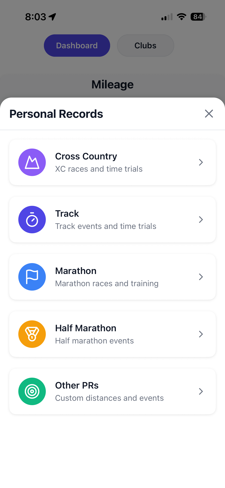

Practice times
Post practice once. The whole team sees it.
Put practices, meets and workouts on the team calendar, for everyone or one training group. Athletes RSVP in a tap, so you know who’s coming before you get there.
For cross country & track coaches
Stride Run is a free iPhone app for running teams. You post practice times once and the whole team sees them. You send workouts and announcements in one place, keep your roster in training groups, and see who’s actually putting in the miles, plus everyone’s PRs and race results.
Free for coaches and athletes. iPhone only for now (iOS 17 or later). Built by a high school XC coach for his own team.
Most coaches run their team out of a group text, a spreadsheet and a separate running app. Stride puts it in one place, built for running: the schedule and the messages, plus the training itself.
Put practices, meets and workouts on the team calendar, for everyone or one training group. Athletes RSVP in a tap, so you know who’s coming before you get there.

A team-wide chat, announcements for meet times and weather calls, polls, and one-on-one messages with any athlete. No more lost group texts.

Save your go-to workouts and send them to the calendar for the whole team or one group. Athletes log their runs and splits down to the 400m lap.

Every athlete in one list. Sort them into training groups (varsity, JV, distance, sprints, whatever fits your program), and each group gets its own chat.

A weekly mileage leaderboard for the team, from runs athletes record in Stride or import from Apple Health (including Apple Watch, Garmin and COROS through Apple Health).

Athletes keep their PRs and race history. Coaches log XC and track seasons and meets, results rank by time, and XC meets get top-five team scoring automatically.
Free for coaches and athletes: your club, team chat, announcements, polls, the team calendar, training groups, the weekly mileage leaderboard, up to 5 saved workouts, run tracking, PRs and race logs, and team invites. Athletes never pay to be on a team.
Coach Premium ($19.99/month or $159.99/year) adds deeper coaching tools: attendance, daily readiness check-ins, weekly team goals, each athlete’s training at a glance, private coach notes and more leaderboard views. Every new club gets these free for its first 7 days.
Stride sits between a team-logistics app and a running app. If you’re weighing it up:
“I absolutely love this app because it carries stuff that no running app carries with features like clubs and ai coaching.”
“…everything is in one single place, and the AI Coach interprets your data automatically, making it simple and straightforward. Plus, the team interface is super clean. You can really tell this was built by a runner, for runners.”
Free for coaches and athletes. Set it up in two minutes.
Download free